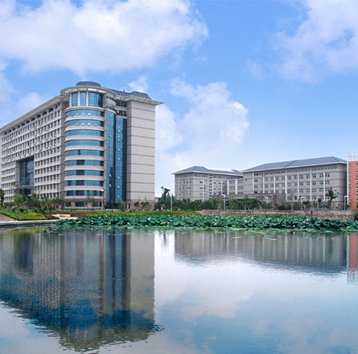

公司简介：
君集水处理股份有限公司（简称“君集股份”），是一家专注于污水深度处理和废水资源化技术开发及应用的国家高新技术企业。公司同时致力于工业污水深度处理，企业和市政污水处理厂提标改造，各类河道、湖泊等地表水修复治理以及再生水回用等领域的方案设计、设备制造、工程承包及投资运营服务。
君集股份集科研技术与项目开发于一体，以“君集水处理研究院”为技术支撑，拥有一批实战经验丰富的技术工程师。公司现有员工近百人，中高级职称工程师20余人，累计申报并获授权国家专利近百项，获批成立了“湖北省污水资源化工程技术研究中心”、“李圭白院士专家工作站”，并且先后与华中科技大学、哈尔滨工业大学水资源国家工程研究中心、中南设计院、武汉科技大学、武汉纺织大学、武汉工商学院等科研院所达成战略合作。
君集股份历经数年在工程项目中不断开发创新，研究出一系列拥有自主知识产权的高标准化污水处理技术，并已实现核心工艺技术自主化、服务个性化、能耗低碳化、工艺模块化、运营智能化。其中在工业污水深度处理领域，拥有大规模粉末活性炭复合再生技术和超大规模复杂工业污水粉末活性炭固液分离技术，并已研发生成成套专用设备。目前该技术已成功攻克劣Ⅴ类印染废水处理至地表Ⅳ类水的世界性难题。在城镇生活污水处理领域，君集拥有复合性活性炭吸附技术，该技术在对现有城镇生活污水处理厂的提标改造当中，可低成本将尾水处理到地表Ⅲ类水，具有低成本高标准的特性。
公司目前已在多省市建立10多个污水处理场项目，完成河道湖泊等地表水修复项目六十多个，项目均获得用户百分之百好评，其中浙江嵊新污水处理厂提标改造项目将工业印染污水提档升级至地表Ⅳ类水，成为全国首例示范性工程。
君集股份秉承科技治污，创领未来的企业宗旨，致力于打造污水处理领域领军品牌。君集武汉、环保天下，我们期待与您共同努力，共创碧水蓝天。